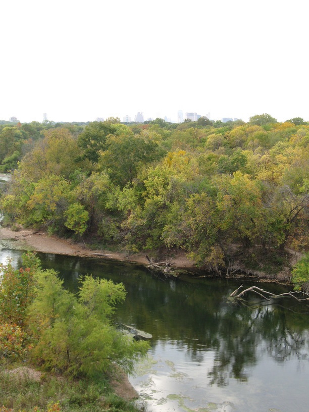

2 Nov 2008, Austin, TX
I rode into Austin, TX today. I'm staying with Sebastian, a friend of Sascha's. He's also an engineer & cyclist so we've had a lot to talk about.
The ride was pretty—especially through Buescher & Bastrop State Parks. Austin seems like a cool place so far—reminds me of Columbus.
